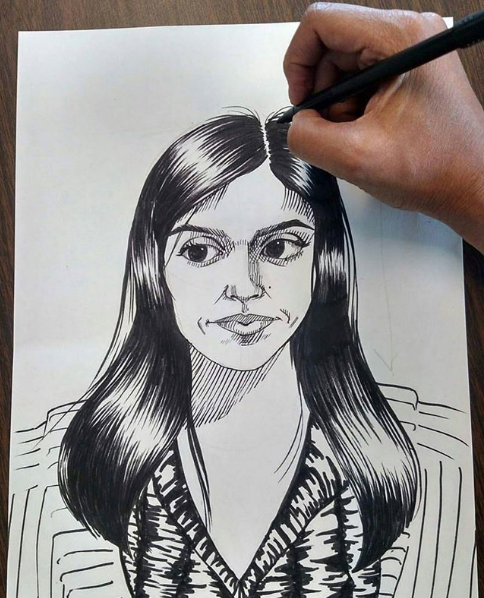

<div class="container">

  <div class="row">

    <div class="col-s-12 col-md-6 col-lg-6 leftCol">
      
    </div>

    <div class="col-s-12 col-md-6 col-lg-6 rightCol">
      <h3 class="bioheading">About the Artist</h3>

      <p>I was born and raised in the San Fernando Valley to immigrant parents who worked hard to give me a wholesome education, so I spent my formative years in a Catholic school surrounded by sassy nuns and Christian imagery. My parents and grandparents were devout Catholics who reinforced the teachings I had and our traditions were shaped by the Church. I studied fine arts and Chicano studies in Cal State Northridge, opting against a more "practical" major that would give me a clear career path, despite the frequent teasing of my friends, saying I would go on to become a successful VCR repair person. </p>

      <p>Upon graduating, I returned to education, teaching art (I showed them). My own art took a backseat to my career as an art educator. And I neglected my passion, feeling it was a luxury a woman of color like myself could not afford to pursue. Instead I focused on establishing my career in education and surviving. I satisfied myself in knowing that I taught art everyday, even though it wasn’t the same as pursuing my own artistic inclinations. Finally a few years into my career, I picked it up again. </p>

      <p>An inktober challenge gave me the opportunity to draw regularly, when it was over I had so much momentum, I kept going and making pieces. Struggling to find a voice and style I found inspiration in the political climate that was dividing the country through the election and presidency of Trump. His rhetoric of hate fueled me in creating a series of political cartoons and satirical portraits of him and his cabinet. But the imagery and negativity began to take a toll on me, and the fatigue gave way to more personal and cultural art that still continued to fight the negative rhetoric, but through authentic and loving portrayals of my culture. Following a trend of art in films that sought to uplift disenfranchised communities, such as Coco, Black Panther, Wonder Woman, Star Wars with it’s diverse cast starring a woman and so many more, my art wanted to echo those positive sentiments as my personal form of resistance. My art features feminist, political and cultural themes and draws on inspiration from Mexican folk art, traditional Christian art and classical portraiture.
      </p>

    </div>


  </div>
</div>